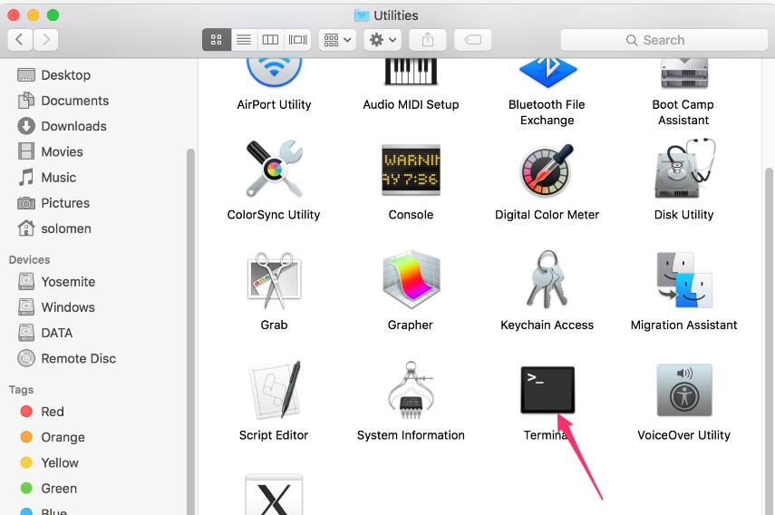

Set up Your Raspberry Pi¶
If You Have a Screen¶
If you have a screen, it will be easy for you to operate on the Raspberry Pi.
Required Components
Any Raspberry Pi |
1 * Power Adapter |
1 * Micro SD card |
1 * Screen Power Adapter |
1 * HDMI cable |
1 * Screen |
1 * Mouse |
1 * Keyboard |
Insert the SD card you’ve set up with Raspberry Pi OS into the micro SD card slot on the underside of your Raspberry Pi.
Plug in the Mouse and Keyboard.
Connect the screen to Raspberry Pi’s HDMI port and make sure your screen is plugged into a wall socket and switched on.
Note
If you use a Raspberry Pi 4, you need to connect the screen to the HDMI0 (nearest the power in port).
Use the power adapter to power the Raspberry Pi. After a few seconds, the Raspberry Pi OS desktop will be displayed.

If You Have No Screen¶
If you don’t have a display, you can log in to the Raspberry Pi remotely, but before that, you need to get the IP of the Raspberry Pi.
Get the IP Address¶
After the Raspberry Pi is connected to WIFI, we need to get the IP address of it. There are many ways to know the IP address, and two of them are listed as follows.
1. Checking via the router
If you have permission to log in the router(such as a home network), you can check the addresses assigned to Raspberry Pi on the admin interface of router.
The default hostname of the Raspberry Pi OS is raspberrypi, and you need to find it. (If you are using ArchLinuxARM system, please find alarmpi.)
2. Network Segment Scanning
You can also use network scanning to look up the IP address of Raspberry Pi. You can apply the software, Advanced IP scanner and so on.
Scan the IP range set, and the name of all connected devices will be displayed. Similarly, the default hostname of the Raspberry Pi OS is raspberrypi, if you haven’t modified it.
Use the SSH Remote Control¶
We can open the Bash Shell of Raspberry Pi by applying SSH. Bash is the standard default shell of Linux. The Shell itself is a program written in C that is the bridge linking the customers and Unix/Linux. Moreover, it can help to complete most of the work needed.
For Linux or/Mac OS X Users
Step 1
Go to Applications->Utilities, find the Terminal, and open it.
Step 2
Type in ssh pi@ip_address . “pi”is your username and “ip_address” is your IP address. For example:
ssh pi@192.168.18.197
Step 3
Input”yes”.

Step 4
Input the passcode and the default password is raspberry.

Step 5
We now get the Raspberry Pi connected and are ready to go to the next step.

Note
When you input the password, the characters do not display on window accordingly, which is normal. What you need is to input the correct password.
For Windows Users
If you’re a Windows user, you can use SSH with the application of some software. Here, we recommend PuTTY.
Step 1
Download PuTTY.
Step 2
Open PuTTY and click Session on the left tree-alike structure. Enter the IP address of the RPi in the text box under Host Name (or IP address) and 22 under Port (by default it is 22).

Step 3
Click Open. Note that when you first log in to the Raspberry Pi with the IP address, there prompts a security reminder. Just click Yes.
Step 4
When the PuTTY window prompts “login as:”, type in “pi”(the user name of the RPi), and password: “raspberry” (the default one, if you haven’t changed it).
Note
When you input the password, the characters do not display on window accordingly, which is normal. What you need is to input the correct password.
If inactive appears next to PuTTY, it means that the connection has been broken and needs to be reconnected.
Step 5
Here, we get the Raspberry Pi connected and it is time to conduct the next steps.
Note
If you are not satisfied with using the command window to control the Raspberry Pi, you can also use the remote desktop function, which can help us manage the files in the Raspberry Pi easily.
For details on how to do this, please refer to Remote Desktop.